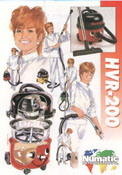
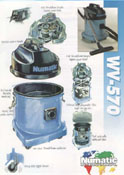
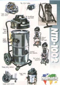

. . . . . commercial . . . . . wet . . . . . industrial . . . . . shampoo . . . . . domestic . . . . .
|
 |
 |
 |
The Numatic International vacuum cleaner range is enormous, possibly one of the largest and most comprehensive ranges of machinery in the business. Whether you want a small plastic domestic dry use vacuum cleaner for the home or a 60 litre industrial steel wet pick up machine, we have the product.... and the knowledge to ensure the machine is durable, practical and effective.
We manufacture all our machines in Chard, England and can build a machine for virtually any application. Our machines can be colour-coded for your own requirements, made with your own logos and produced to order.
Numatic vacuum cleaners are fitted with either 1, 2 or 3 1000 Watt motors, depending on the machine size and are built in many different materials, ABS plastic, stainless and galvanised steel or even our own guaranteed Structofoam plastic.
To order a full Numatic catalogue simply click the icon below or contact the Numatic International Literature Department.